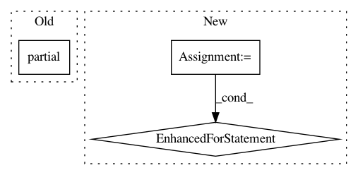

7743f789123b8ea206253ba9da98a6a9ed0f7a8f,skopt/tests/test_common.py,,,#,21
Before Change
// treated separately
MINIMIZERS = (gp_minimize,
partial(forest_minimize, base_estimator="dt"),
partial(forest_minimize, base_estimator="et"),
partial(forest_minimize, base_estimator="rf"),
gbrt_minimize)
After Change
for est, acq in product(["dt", "et", "rf"], ACQUISITION):
MINIMIZERS.append(
partial(forest_minimize, base_estimator=est, acq=acq))
for acq in ACQUISITION:
MINIMIZERS.append(partial(gbrt_minimize, acq=acq))
def check_minimizer_api(result, n_models):
assert(isinstance(result.space, Space))
assert_equal(len(result.models), n_models)
assert_equal(len(result.x_iters), 7)
In pattern: SUPERPATTERN
Frequency: 3
Non-data size: 3
Instances
Project Name: scikit-optimize/scikit-optimize
Commit Name: 7743f789123b8ea206253ba9da98a6a9ed0f7a8f
Time: 2016-07-23
Author: manojkumarsivaraj334@gmail.com
File Name: skopt/tests/test_common.py
Class Name:
Method Name:
Project Name: snorkel-team/snorkel
Commit Name: 92f1b43acaf2438ad86fd94f2713158f6fe93eda
Time: 2016-11-07
Author: henry.ehrenberg@outlook.com
File Name: snorkel/features/generic_features.py
Class Name:
Method Name: feats_from_matrix_generator
Project Name: tech-srl/code2vec
Commit Name: 89fcfe5f49502043e45de93c47acfc6de2180647
Time: 2019-04-05
Author: eladnah@gmail.com
File Name: keras_model.py
Class Name: Code2VecModel
Method Name: _create_metrics_for_keras_model